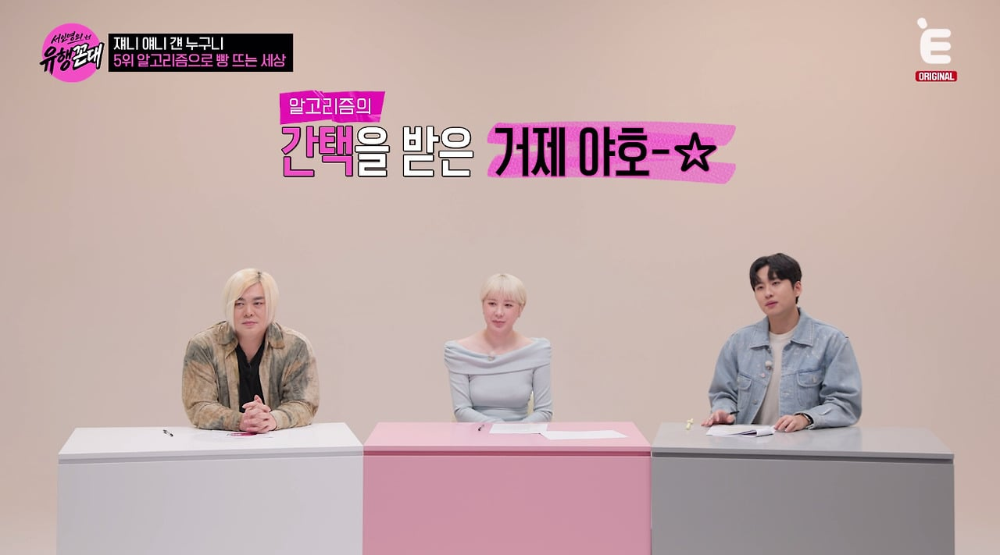
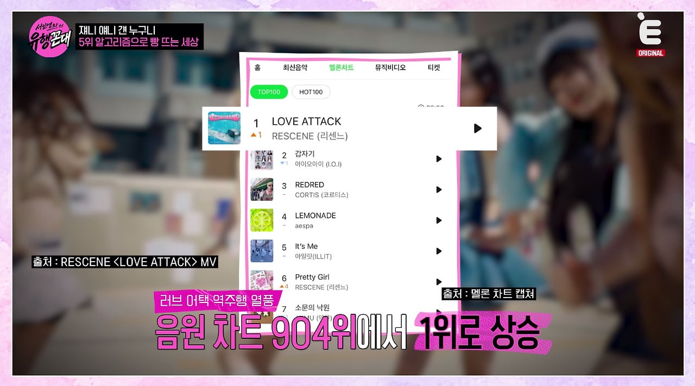
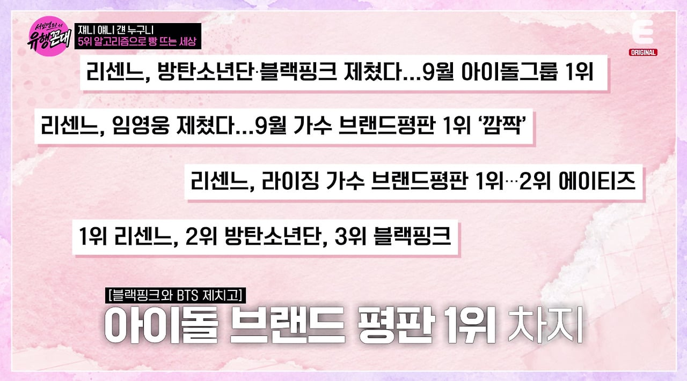
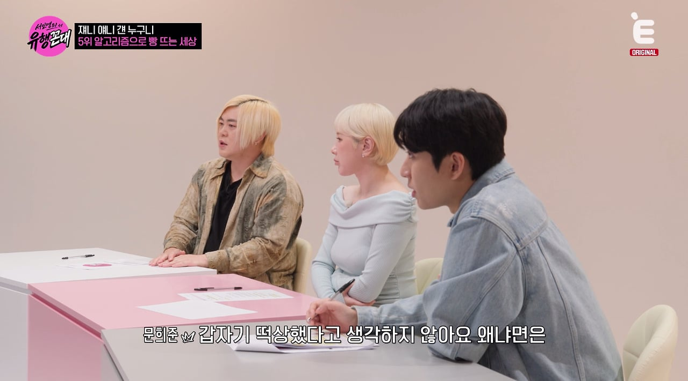
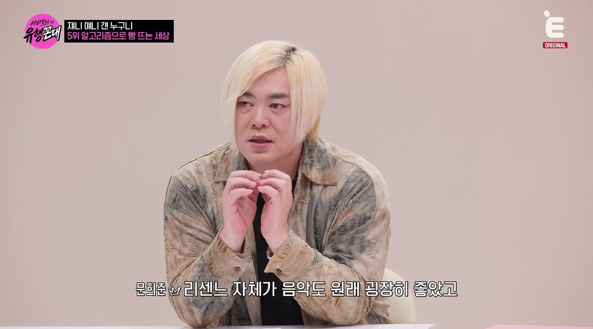
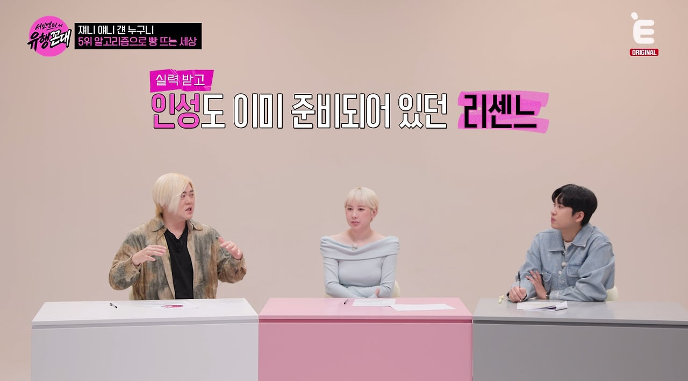
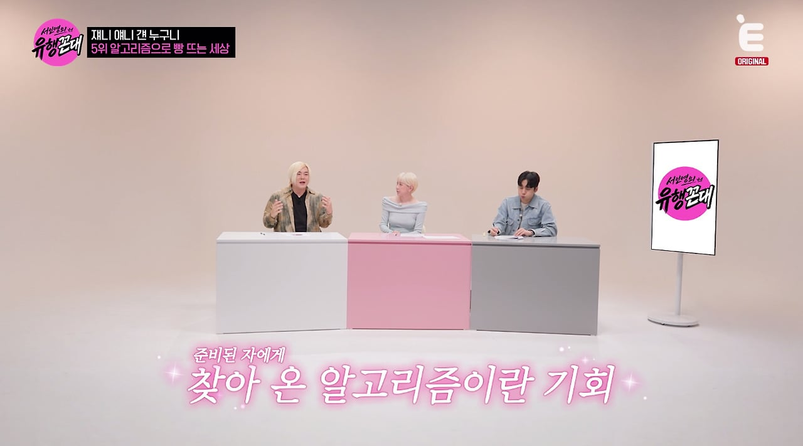
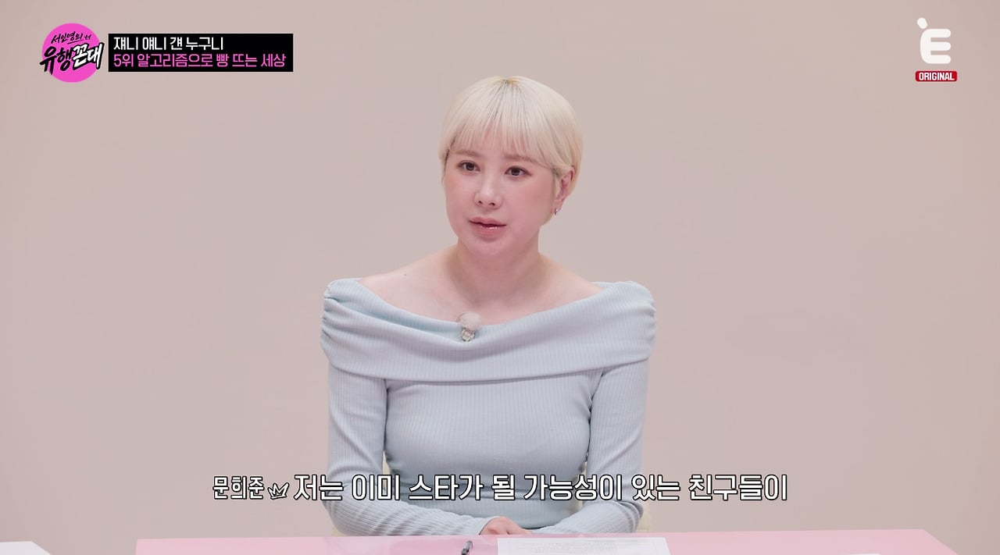
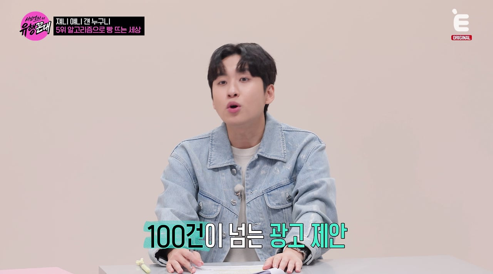
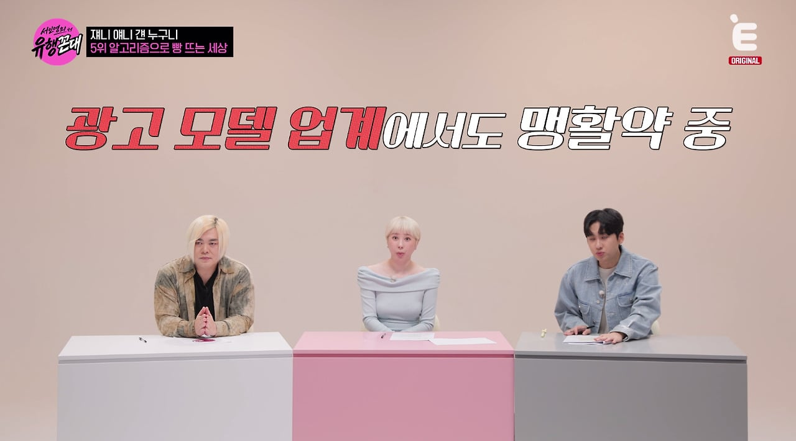
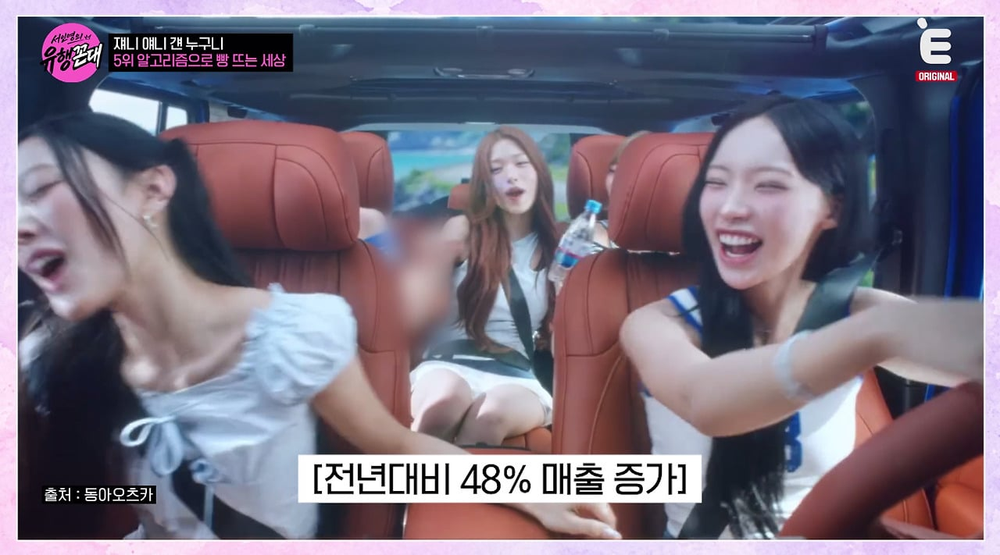











일단 그냥 노래가 좋아
https://pann.nate.com/talk/375670571
판독기 진작부터 돌아갔잖음
맨날 천날 리센느 한남육수픽이라고
리센느 정의구현당했다고 이수만 여돌한테 따였다고 쓰던데
실제로는 전연령에서 호감픽이고
이수만 여돌한테 리센느만 순위따인게 아닌데 ㅋㅋㅋㅋ
이게 맞지ㅋㅋㅋ 뭔 리센느가 엄청난 서사를 가지고 있다 지랄하는게 꼴보기 싫은 이유지
리센느 포함 대부분 아이돌들은 각자 열심히 살고 준비가 다 되어있는데 운이 안따라줬을 뿐이지
자기 매력을 잘 어필 할 수 있는 기회가 오면 다른 걸그룹들도 뜰 가능성이 무궁무진함
다만 리센느가 훨씬 뜬 이유는 컨셉 자체가 거제 소녀, 신라 공주 같은 익숙함에 개그까지 얹히니까 남녀노소 모두가 부담없이 좋아할만해서 그렇다고 생각함
리센느 노래는 넘 좋은데 안무 좀 신경써줫음 좋겟음 ㅋㅋㅋㅋ
뭔가 안원잘부로 실제성격이랑 습성들을 봐서 그런지
광고나 예능 같은데서 봐도 가식이나 방송용이 아니라 찐으로 웃고 즐기는 거 같아서 아는 동생들 보는 느낌이라 해야하나
문희준은 아직 저 헤어네ㅋㅋ
그니깐 저형도 참 한결같음 ㅋㅋㅋㅋㅋ
떴을때 멤버들끼리 친한것도 한몫하는듯, 아이즈원이 그랬거든 지들끼리 꽁냥거리는거 일본여자애들이 엄청 좋아하고 덕질했음
진자 인생 개 열심히 살아온 거랑 맴버들끼리 기싸움없이 두루두루 친하고 콘텐츠 개 재밋게 하는게 호감이였음
인영누나 폼 무엇